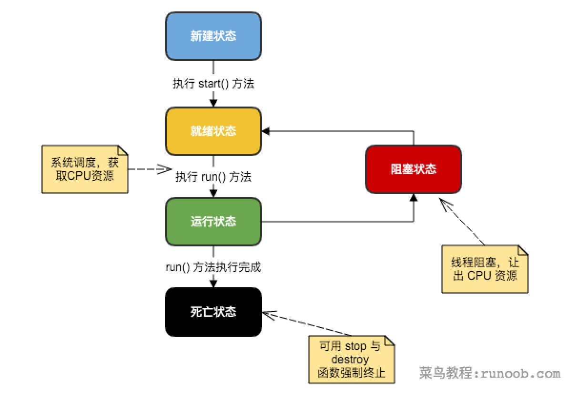

Programación multihilo en Java
Java proporciona soporte integrado para la programación multihilo. Un hilo se refiere a un flujo de control de un solo orden dentro de un proceso; un proceso puede ejecutar varios hilos de forma concurrente, y cada hilo ejecuta diferentes tareas en paralelo.
La programación multihilo es una forma especial de multitarea, pero utiliza una menor sobrecarga de recursos.
Aquí se define otro término relacionado con los hilos: proceso. Un proceso incluye el espacio de memoria asignado por el sistema operativo y contiene uno o más hilos. Un hilo no puede existir de forma independiente; debe ser parte de un proceso. Un proceso se ejecuta continuamente hasta que todos los hilos no demonio hayan terminado de ejecutarse.
La programación multihilo permite a los programadores escribir programas altamente eficientes para aprovechar al máximo la CPU.
Ciclo de vida de un hilo
Un hilo es un proceso de ejecución dinámico; también tiene un proceso que va desde su creación hasta su muerte.
La siguiente figura muestra el ciclo de vida completo de un hilo.

- Estado nuevo:
Usandonewla palabra clave yThreaddespués de crear un objeto de hilo con la clase o sus subclases, el objeto de hilo se encuentra en estado nuevo. Permanece en este estado hasta que el programastart()este hilo.
- Estado listo:
Cuando el objeto de hilo invoca el método start(), el hilo entra en el estado listo. Los hilos en estado listo se encuentran en la cola de listos y deben esperar la programación del planificador de hilos de la JVM.
- Estado en ejecución:
Si un hilo en estado listo obtiene recursos de CPU, puede ejecutarserun(), en ese momento el hilo se encuentra en estado de ejecución. El estado de ejecución es el más complejo; el hilo puede pasar a estado bloqueado, listo o muerto.
- Estado bloqueado:
Si un hilo ejecuta métodos como sleep (dormir), suspend (suspender) y otros, después de perder los recursos que ocupaba, el hilo pasa del estado de ejecución al estado bloqueado. Cuando termina el tiempo de suspensión u obtiene los recursos del dispositivo, puede volver al estado listo. Se puede dividir en tres tipos:
Bloqueo por espera: el hilo en estado de ejecución ejecuta el método wait(), lo que hace que el hilo entre en el estado de bloqueo por espera.
Bloqueo de sincronización: el hilo falla al obtener el bloqueo de sincronización synchronized (porque el bloqueo de sincronización está ocupado por otro hilo).
Otros bloqueos: cuando se emite una solicitud de E/S mediante la llamada a sleep() o join() del hilo, el hilo entra en estado bloqueado. Cuando el estado de sleep() expira, join() espera a que el hilo termine o expire el tiempo, o cuando el procesamiento de E/S finaliza, el hilo vuelve al estado listo.
- Estado muerto:
Cuando un hilo en estado de ejecución completa su tarea u ocurre otra condición de terminación, el hilo cambia al estado de terminación.
Prioridad de los hilos
Cada hilo de Java tiene una prioridad, lo que ayuda al sistema operativo a determinar el orden de planificación de los hilos.
La prioridad de un hilo de Java es un número entero, cuyo rango de valores es de 1 (Thread.MIN_PRIORITY) a 10 (Thread.MAX_PRIORITY).
De forma predeterminada, a cada hilo se le asigna una prioridad NORM_PRIORITY (5).
Los hilos con mayor prioridad son más importantes para el programa y deberían recibir recursos del procesador antes que los hilos de menor prioridad. Sin embargo, la prioridad de los hilos no garantiza el orden de ejecución y depende en gran medida de la plataforma.
Crear un hilo
Java ofrece tres métodos para crear hilos:
- Implementando la interfaz Runnable;
- Heredando de la propia clase Thread;
- Creando hilos mediante Callable y Future.
Crear un hilo implementando la interfaz Runnable
La forma más sencilla de crear un hilo es crear una clase que implemente la interfaz Runnable.
Para implementar Runnable, una clase solo necesita ejecutar una llamada al método run(), con la siguiente declaración:
Puedes sobrescribir este método; es importante entender que run() puede invocar otros métodos, usar otras clases y declarar variables, igual que el hilo principal.
Después de crear una clase que implemente la interfaz Runnable, puedes instanciar un objeto de hilo dentro de la clase.
Thread define varios constructores; el siguiente es el que usamos con frecuencia:
Aquí, threadOb es una instancia de una clase que implementa la interfaz Runnable, y threadName especifica el nombre del nuevo hilo.
Después de crear el nuevo hilo, solo se ejecutará cuando llames a su método start().
A continuación se muestra un ejemplo de cómo crear un hilo y comenzar a ejecutarlo:
Ejemplo
Compile el programa anterior; el resultado de la ejecución es el siguiente:
Creating Thread-1 Starting Thread-1 Creating Thread-2 Starting Thread-2 Running Thread-1 Thread: Thread-1, 4 Running Thread-2 Thread: Thread-2, 4 Thread: Thread-1, 3 Thread: Thread-2, 3 Thread: Thread-1, 2 Thread: Thread-2, 2 Thread: Thread-1, 1 Thread: Thread-2, 1 Thread Thread-1 exiting. Thread Thread-2 exiting.
Crear un hilo heredando de Thread
El segundo método para crear un hilo es crear una nueva clase que herede de la clase Thread y luego crear una instancia de esa clase.
La clase heredada debe sobrescribir el método run(), que es el punto de entrada del nuevo hilo. También debe llamar al método start() para poder ejecutarse.
Aunque este método se enumera como una forma de implementar multihilo, en esencia también es una instancia que implementa la interfaz Runnable.
Ejemplo
Compile el programa anterior; el resultado de la ejecución es el siguiente:
Creating Thread-1 Starting Thread-1 Creating Thread-2 Starting Thread-2 Running Thread-1 Thread: Thread-1, 4 Running Thread-2 Thread: Thread-2, 4 Thread: Thread-1, 3 Thread: Thread-2, 3 Thread: Thread-1, 2 Thread: Thread-2, 2 Thread: Thread-1, 1 Thread: Thread-2, 1 Thread Thread-1 exiting. Thread Thread-2 exiting.
Métodos de Thread
La siguiente tabla enumera algunos métodos importantes de la clase Thread:
| N.º | Descripción del método |
|---|---|
| 1 |
public void start() Hace que este hilo comience a ejecutarse;JavaLa máquina virtual invoca el método run de este hilo. |
| 2 |
public void run() Si el hilo se construyó con un objeto Runnable independiente, se invoca el método run de ese objeto Runnable; de lo contrario, el método no hace nada y retorna. |
| 3 |
public final void setName(String name) Cambia el nombre del hilo para que coincida con el parámetro name. |
| 4 |
public final void setPriority(int priority) Cambia la prioridad del hilo. |
| 5 |
public final void setDaemon(boolean on) Marca el hilo como hilo demonio o hilo de usuario. |
| 6 |
public final void join(long millisec) Espera como máximo millis milisegundos a que este hilo termine. |
| 7 |
public void interrupt() Interrumpe el hilo. |
| 8 |
public final boolean isAlive() Comprueba si el hilo está activo. |
Los métodos anteriores son invocados por objetos Thread; los métodos de la siguiente tabla son métodos estáticos de la clase Thread.
| N.º | Descripción del método |
|---|---|
| 1 |
public static void yield() Suspende el objeto de hilo que se está ejecutando actualmente y ejecuta otros hilos. |
| 2 |
public static void sleep(long millisec) Hace que el hilo actualmente en ejecución duerma (detenga la ejecución) durante el número especificado de milisegundos; esta operación se ve afectada por la precisión y exactitud del temporizador del sistema y del programador. |
| 3 |
public static boolean holdsLock(Object x) Devuelve true si y solo si el hilo actual mantiene el bloqueo de monitor sobre el objeto especificado. |
| 4 |
public static Thread currentThread() Devuelve una referencia al objeto de hilo que se está ejecutando actualmente. |
| 5 |
public static void dumpStack() Imprime la traza de pila del hilo actual en el flujo de error estándar. |
Ejemplo
El siguiente programa ThreadClassDemo demuestra algunos métodos de la clase Thread:
Código del archivo DisplayMessage.java:
Código del archivo GuessANumber.java:
Código del archivo ThreadClassDemo.java:
El resultado de la ejecución es el siguiente; cada ejecución produce un resultado diferente.
Starting hello thread... Starting goodbye thread... Hello Hello Hello Hello Hello Hello Goodbye Goodbye Goodbye Goodbye Goodbye .......
Crear hilos mediante Callable y Future
1. Crea una clase de implementación de la interfaz Callable e implementa el método call(). Este método call() actuará como el cuerpo de ejecución del hilo y tendrá un valor de retorno.
2. Crea una instancia de la clase de implementación de Callable y usa la clase FutureTask para envolver el objeto Callable. Este objeto FutureTask encapsula el valor de retorno del método call() del objeto Callable.
3. Usar el objeto FutureTask como target del objeto Thread para crear e iniciar un nuevo hilo.
4. Llamar al método get() del objeto FutureTask para obtener el valor de retorno después de que el hilo secundario termine su ejecución.
Ejemplo
Comparación de las tres formas de crear hilos
1. Al usar el enfoque de implementar las interfaces Runnable y Callable para crear múltiples hilos, la clase de hilo solo implementa la interfaz Runnable o Callable, y aún puede heredar de otras clases.
2. Al usar el enfoque de heredar la clase Thread para crear múltiples hilos, la escritura es simple. Si necesita acceder al hilo actual, no es necesario usar el método Thread.currentThread(), simplemente use this para obtener el hilo actual.
Algunos conceptos principales sobre hilos
En la programación con múltiples hilos, necesita comprender los siguientes conceptos:
- Sincronización de hilos
- Comunicación entre hilos
- Interbloqueo de hilos
- Control de hilos: suspensión, detención y reanudación
Uso de la programación multihilo
La clave para utilizar eficazmente múltiples hilos es comprender que los programas se ejecutan de forma concurrente y no secuencial. Por ejemplo: si el programa tiene dos subsistemas que necesitan ejecutarse concurrentemente, entonces es necesario utilizar programación con múltiples hilos.
Mediante el uso de múltiples hilos, se pueden escribir programas muy eficientes. Sin embargo, tenga en cuenta que si crea demasiados hilos, la eficiencia de ejecución del programa en realidad disminuye, no aumenta.
Recuerde que la sobrecarga del cambio de contexto también es importante. Si crea demasiados hilos, ¡el tiempo que la CPU dedica al cambio de contexto será mayor que el tiempo de ejecución del programa!
Otras extensiones